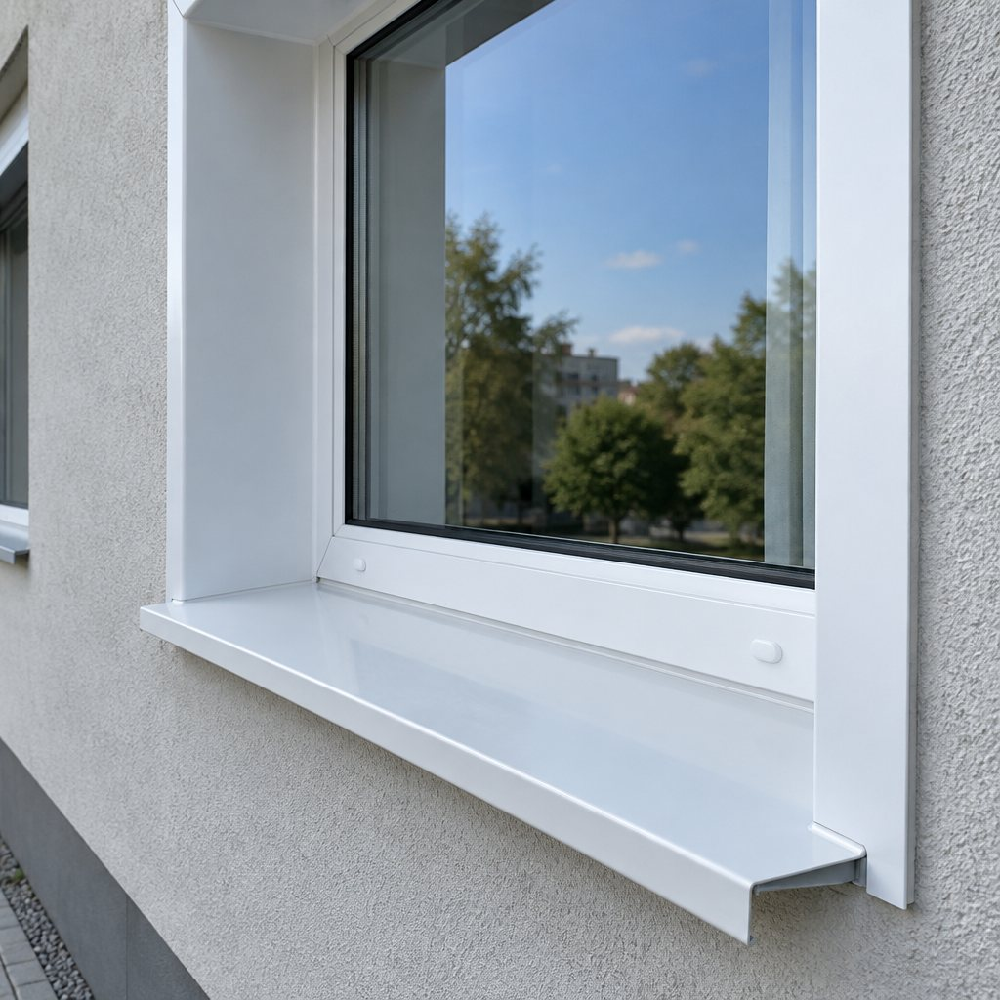
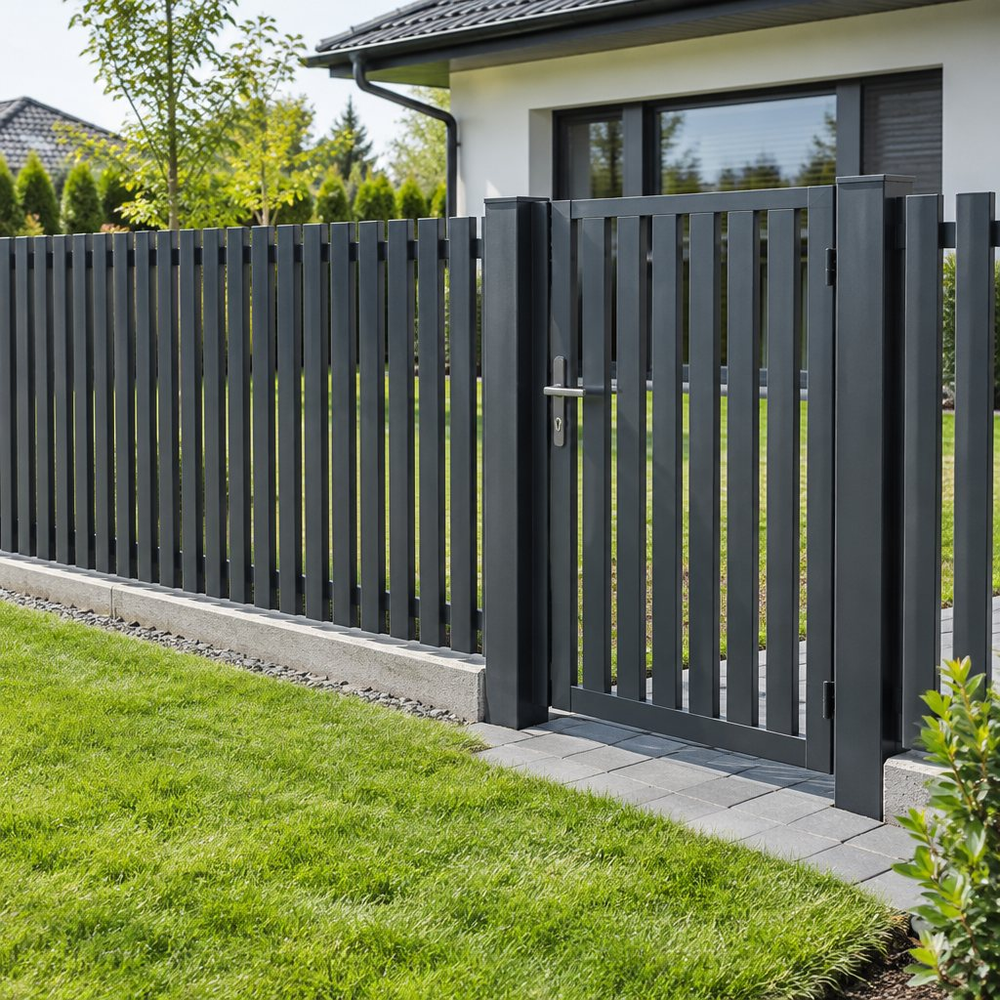
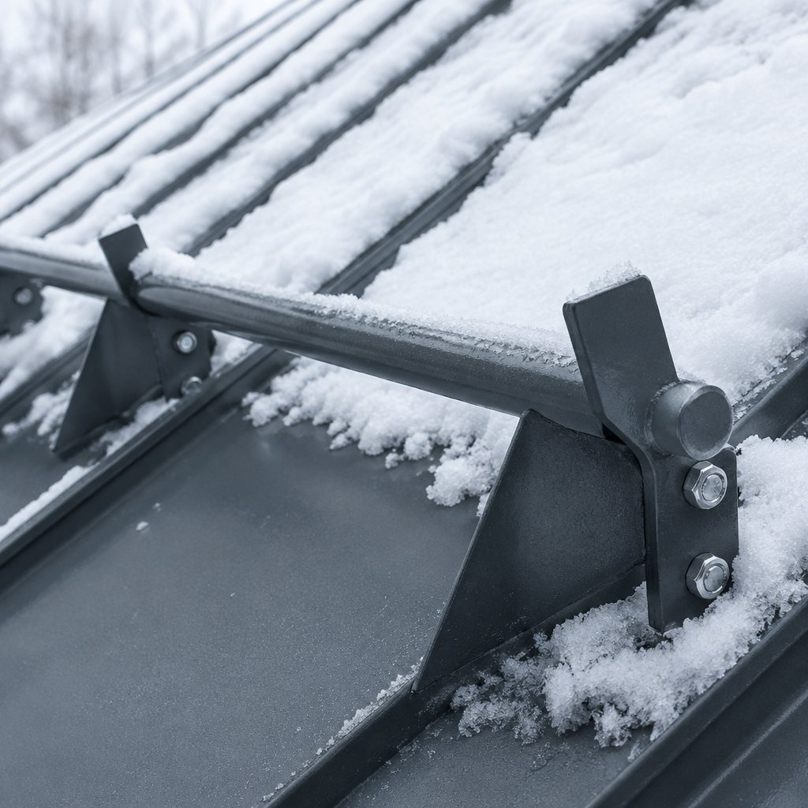
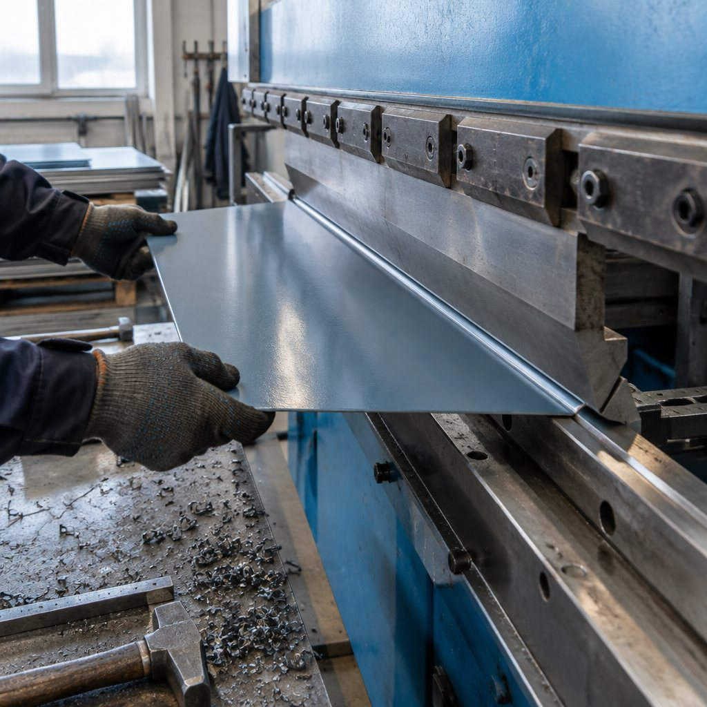

Закрывает стык скатов. Делаем полукруглый и плоский, с рёбрами жёсткости и заглушками на торцы.

Доборные элементы
из гладкого металла
по вашему размеру
Коньки, ветровые планки, отливы, откосы, снегозадержатели, заборы и жалюзи. Полимерное покрытие, большой выбор цвета по RAL. Гибка на своём листогибе, доставка бесплатно каждые выходные.
Свой листогибУшачи
Цвет по RALполимерное покрытие
Бесплатнодоставка по выходным
По размерубез сварных стыков
профили
Что гнём
на листогибе
Восемь групп изделий. Любая позиция — по вашему размеру, цвету и толщине металла.
Закрывает торец кровли и лобовую доску. Гнём под ваш угол, полку подбираем по ширине свеса.
Отводит воду от стены и фундамента. Двойная отбортовка, чтобы вода не шла под планку.
Наружные откосы из гладкого металла: ровные, не выгорают, моются. С отливом и заглушками.
Закрывает наружные углы фасада, примыкания и стыки панелей.
Трубчатый или пластинчатый: держит снег на скате и не даёт ему сходить пластом на голову.
Столбы, лаги, полосы жалюзи из окрашенного металла. Собираем комплект под ваш размер.
Если нужна нестандартная деталь — гнём по вашему размеру, эскизу или образцу.
конфигуратор
Соберите позиции
и увидите развёртку
Выберите элемент, цвет по RAL, толщину металла и метраж: слева перерисуется сечение с размерами, справа посчитается ширина заготовки, площадь и вес.
развёртка: —металл: 0,5 ммцвет: RAL 7016
Расчёт по геометрии профиля и весу стали 7850 кг/м³. Итоговую длину листа, раскрой и цену уточняем при заказе: длинные элементы гнём целиком, без сварных стыков.
Отправить расчётпокрытие
Цвет, который
не выгорает
Работаем с гладким металлом в полимерном покрытии: полиэстер и матовые серии. Цвет подбираем по RAL под кровлю, фасад и забор.
Почему гладкий металл, а не обычная краска
Полимерное покрытие нанесено на заводе и запечено: оно не облезает плёнкой, не требует подкраски через сезон и нормально переносит наши зимы. Планка, которую покрасили «по месту», через год выглядит хуже, чем выглядела в день установки.
Толщина 0,45–0,5 мм — обычный выбор для доборных элементов, 0,7 мм берут там, где на планку опираются или она работает как отбойник.
Что важно в гибке
- Гнуть по радиусу, а не «в угол», чтобы покрытие не треснуло на сгибе
- Резать с защитной плёнкой, чтобы не поцарапать лицевую сторону
- Держать геометрию: перекос планки видно на кровле сразу
- Не делать стык посередине ската без необходимости
выкрасы
RAL 7016Антрацит
RAL 8017Шоколад
RAL 6005Зелёный мох
RAL 3005Вишня
RAL 9003Белый
RAL 5005Сигнальный синий
RAL 1015Слоновая кость
RAL 7024Графит
Оттенки на экране приблизительные. Точный цвет показываем по вееру RAL и образцу металла.

доставка
Привозим
по выходным
Каждые выходные — бесплатно в Ушачи, Лепель и Оршу. Другие адреса Витебской области обсуждаем отдельно.
бесплатноУшачи
Свой город и район. Привозим на объект, помогаем разгрузить длинномер.
бесплатноЛепель
Каждые выходные. Согласуем день и время, чтобы вы были на объекте.
бесплатноОрша
Каждые выходные. Комплект привозим одним рейсом, чтобы ничего не ждать.
порядок
От замера
до кровли
Пять шагов: без «привезём что-нибудь похожее».
01Замер
Снимаем размеры на объекте или считаем по вашему эскизу: длины скатов, свесы, углы, высота окон.
02Расчёт и цвет
Считаем метраж и количество, показываем развёртку профиля и выкрасы RAL. Согласуем до раскроя.
03Гибка
Раскраиваем гладкий металл с полимерным покрытием и гнём на листогибе. Кромки ровные, без заломов.
04Доставка
Бесплатно в Ушачи, Лепель и Оршу каждые выходные. Длинномер везём аккуратно, без заломов.
05Монтаж
Подскажем крепёж и порядок установки. Если нужно — приедем и смонтируем сами.
изделия
Кровля, окна,
забор
Полный комплект на объект: от конька до отлива под окном.




заявка
Считаем
по метражу
Назовите длины скатов или размеры окон, и цвет. Скажу метраж, количество позиций и когда сможем привезти. Фото объекта помогает больше, чем описание.
Длины скатовРазмеры оконЦвет RALТолщина металла
Цену называем после расчёта метража: она зависит от цвета, толщины и количества позиций.
вопросы
Коротко
по делу
Из какого металла делаете?
Гладкий лист с полимерным покрытием: полиэстер и матовые покрытия. Толщина 0,45–0,5 мм, цвет по каталогу RAL. Такой металл не выгорает за сезон и не требует покраски.
Можно ли покрасить в цвет моей кровли?
Да, подбираем по RAL. Привезите образец или назовите номер цвета и толщину: если у поставщика есть такой оттенок, сделаем в цвет.
Какая минимальная партия?
Делаем и одну планку. Ограничение не по количеству, а по длине листа: длинные элементы гнём из целого листа, без сварных стыков.
Как быстро изготовите?
Простые позиции — от нескольких дней, если цвет есть у поставщика. Точный срок называем при заказе: зависит от цвета и объёма.
Доставка платная?
Бесплатно в Ушачи, Лепель и Оршу каждые выходные. По другим адресам Витебской области — обсуждаем отдельно.
Делаете откосы на окна?
Да. Наружные откосы и отливы из гладкого металла: замеряем проём, гнём по размеру, ставим с заглушками и герметиком.
Снегозадержатели на любую кровлю?
На металлическую кровлю ставим трубчатые и пластинчатые. Под фальц и профнастил крепёж разный, поэтому уточняем тип кровли до изготовления.
Даёте гарантию?
На изделия — да: геометрия, покрытие, крепёж. Если планка пришла с заломом или не тем размером, переделываем.
где находимся
Ушачи, Витебская область
Производство в Ушачах. Доставка бесплатно в Ушачи, Лепель и Оршу каждые выходные, по другим адресам — по договорённости.